Pregunta original per cercar:
"Amb les matrius indicades, calcula la distància al pla de retallat posterior (zfar)"
"Amb les matrius indicades, calcula la distància al pla de retallat anterior (znear)"
1. ProjectionMatrix (PM)
2. ProjectionMatrixInv (invPM)
Tens C i D.
Fórmules:
Exemple (del teu exercici):
Tens A i B. Aquest mètode sol ser més ràpid.
Fórmules:
Exemple (del teu exercici):
Si a la matriu de projecció (PM) el valor C és exactament -1:
Amb les matrius indicades, calcula la distància al pla de retallat posterior (zfar)
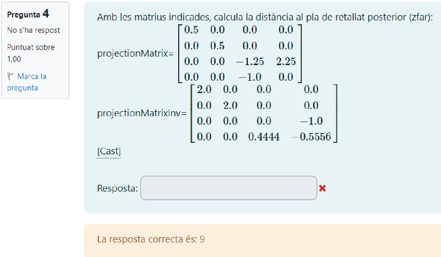
Pregunta original per cercar:
"El light path que explica el color dominant al pixel central del quadrat 1 és..."
"Trieu-ne una: LSDSE, LSDE, LDDE, LSE..."
Vocabulari (La "Fórmula")
Sempre es llegeix de la Llum (L) cap a l'Ull (E).
A. LSE (Reflex Especular)
B. LDE (Color Difús)
C. LDSE (Reflex d'un objecte)
D. LSDE (Càustiques - Cas "Trampa")
El light path que explica el color dominant al pixel central del quadrat 1 és...
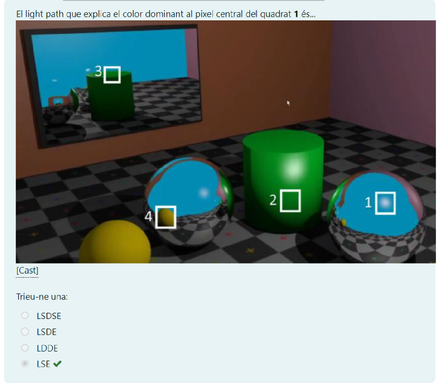
Solucions per tots els quadrats
Quadrat 1: LSE
Quadrat 2: LDE
Quadrat 3: LDSE
Quadrat 4: LDSE
Pregunta original per cercar:
"Soposa que P és un punt en eye space. Una forma d'obtenir en un FS la direcció del vector normal en eye space és..."
Conceptes Clau / Fórmula
En codi GLSL:
normalize(cross(dFdx(P), dFdy(P)))
Si tens la posició d'un punt P però no tens la seva normal, la pots fabricar matemàticament:
Resum ràpid (Mnemotècnia):
Busques CROSS (producte vectorial) i dFdx/dFdy.
Mai triïs "dot" (producte escalar) perquè això dona un número, no un vector.
Suposa que P és un punt en eye space. Una forma d'obtenir en un FS la direcció del vector normal en eye space és..."
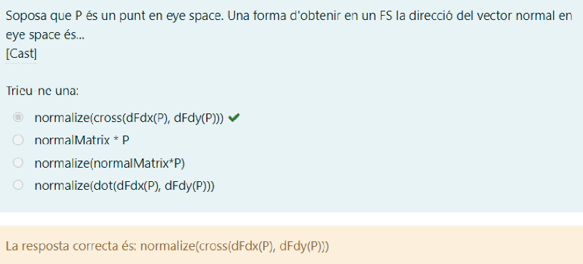
Solució de l'exercici:
normalize(cross(dFdx(P), dFdy(P)))Variants i Trampes:
cross(dFdy(P), dFdx(P)) La normal miraria cap endins (al revés).Pregunta original per cercar:
"Indica quin arbre de rajos pot ser generat per Ray Tracing clàssic"
La Regla d'Or (Visual)
El Ray Tracing Clàssic (Whitted) funciona així:
L'algoritme visual:
Busca la lletra D. Si veus que surt alguna línia de sota d'una D... És FALSA.
Indica quin arbre de rajos pot ser generat per Ray Tracing clàssic:
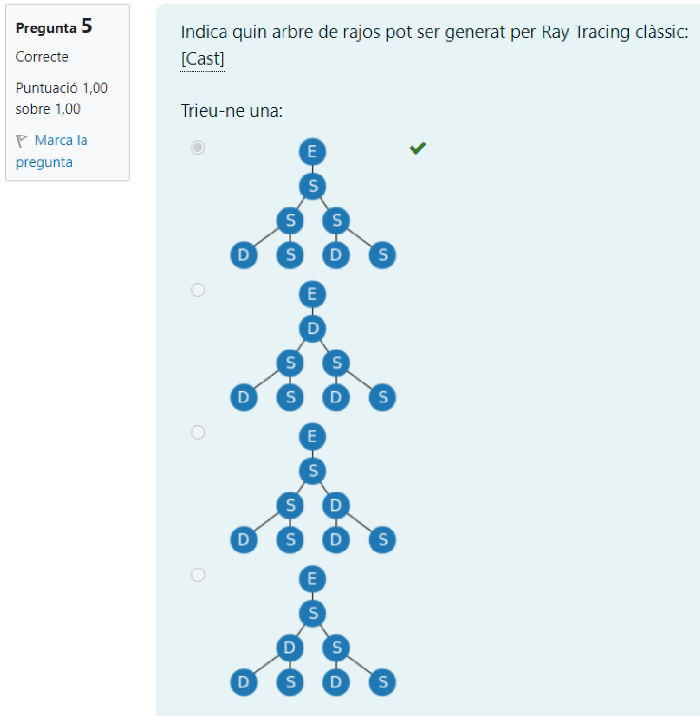
Solució de l'exercici:
Per què les altres són falses?
Variants possibles:
Pregunta original per cercar:
"Indica quina tasca/opció pot fer que alguns fragments no segueixin processant-se:"
Concepte Clau (Tests de Visibilitat)
Si un fragment falla qualsevol d'aquests tests, es descarta (mor) immediatament i es deixa de processar per estalviar rendiment.
Hem d'identificar quines operacions MATEN el fragment (eviten que s'escrigui) i quines només el MODIFIQUEN.
Operacions que DESCARTEN (Aturen el procés):
discard.Operacions que NO descarten (El fragment es processa igual):
Indica quina tasca/opció pot fer que alguns fragments no segueixin processant-se:
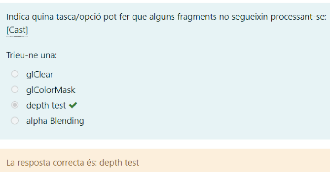
Solució de l'exercici:
Per què les altres són falses?
Pregunta original per cercar:
"Una superfície plana perfectament difosa rep una irradiància de... Si L és la radiància reflectida..."
La Regla d'Or (Llei de Lambert)
En una superfície perfectament difosa (Lambertiana), la Radiància (L) és la mateixa miris des d'on miris.
Heu de distingir entre dos conceptes que sonen semblant però es comporten diferent:
Radiància (): És la "brillantor" que veu l'ull. En superfícies mat (difoses), NO canvia amb l'angle. Un full de paper es veu igual de blanc si el mires de front o de costat.
Intensitat Radiant (): És l'energia bruta enviada en una direcció. Aquesta SÍ que baixa amb l'angle (Llei del Cosinus).
El Truc:
Si la pregunta diu "Radiància" () La resposta és Igualtat ().
Si la pregunta diu "Intensitat" () La resposta porta cosinus ().
Una superfície plana perfectament difosa rep una irradiància de 8 W/m^2. Si L és la radiància reflectida de sortida en direcció perpendicular a la superfície, i L' és la radiància reflectida de sortida a 70 graus de la normal, llavors...
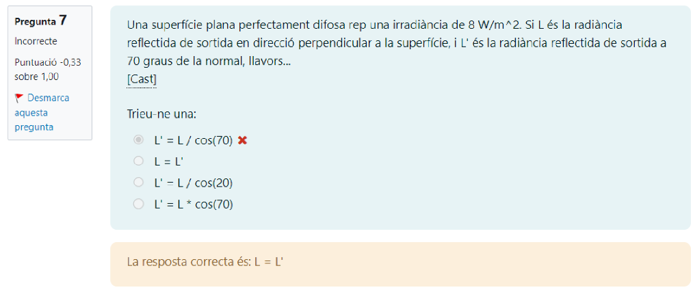
Solució de l'exercici:
Per què?
Perquè és una superfície "perfectament difosa". La brillantor aparent (Radiància) és constant en totes les direccions. El número "8 W/m²" i els "70 graus" són dades irrellevants per despistar.
Variants possibles:
Pregunta original per cercar:
"Siguin P = punt visible de l'escena... En última instància, resoldre el problema de la il·luminació global equival a estimar..."
Concepte Clau (El Sant Greal)
L'objectiu de qualsevol motor de render és trobar la Radiància de Sortida () que surt del punt i viatja cap a la càmera.
Per no confondre't amb les opcions, recorda la diferència entre el que "arriba" i el que "veus":
La Direcció (-w):
Si l'enunciat diu que és la "direcció de visió" (de l'Ull cap al Punt), nosaltres necessitem la llum que fa el camí invers: del Punt cap a l'Ull. Per tant, la direcció és .
Resum: Busques la paraula Radiància + Sortida + Direcció oposada a la visió.
Siguin
P = punt visible de l'escena en una certa direcció de visió w
N = normal de la superfície en el punt P
L = vector unitari del punt P cap a la llum
En última instància, resoldre el problema de la il·luminació global equival a estimar...
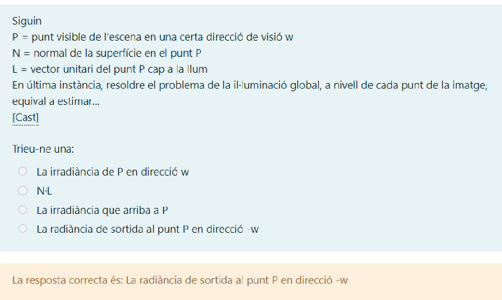
Solució de l'exercici:
Per què les altres són falses?
Pregunta original per cercar:
"Assigna a cada crida/tasca l'ordre relatiu (1,2,3,4) en que s'executa en un pipeline d'OpenGL sense GS"
EL MAPA MESTRE (Ordre Universal)
Imagina una línia de temps que va de la CPU (el teu codi C++) fins a la Pantalla.
glGenVertexArrays / glGenBuffersglBindBuffer / glBufferData (Enviar dades)glDrawArrays / glDrawElements (L'ordre de disparar)gl_Position is written (El VS acaba calculant la posició)fragColor is written (El FS decideix el color)He agrupat les teves captures en 4 casos. Busca quins ítems et surten i ordena'ls segons el mapa de dalt.
Ítems: Backface culling, gl_Position is written, VS execution starts, Clipping
Ítems: VS execution starts, Clipping, glBufferData, Depth test
Ítems: Interpolation (clipping), glGenVertexArrays, VS execution, Viewport transformation
Ítems: fragColor is written, Rasterization, Call to glDrawArrays, Stencil Test
Aquí tens l'explicació de l'exercici seguint exactament la mateixa estructura i format que m'has passat.
Pregunta original per cercar:
"Disposem d'aquesta textura: G H I J K... Indica amb quina opció el FS de sota obté aquest resultat amb l'objecte plane: G."
Concepte Clau (Retallar i Seleccionar)
En OpenGL/GLSL, les coordenades de textura () van habitualment de a .
Quan volem mostrar només una part d'una imatge (un sprite o una lletra d'un atlas), hem de transformar les coordenades d'entrada (que venen del pla complet ) perquè només "llegeixin" un trosset petit de la textura.
La fórmula màgica és:
Per resoldre aquests exercicis sense calcular res complex, segueix aquests passos lògics:
La Lògica del Factor:
Si el nostre pla ens dona valors de a , però nosaltres volem que la textura només es llegeixi de a , hem de multiplicar per 0.1.
La Lògica de l'Offset:
La "G" està al principi de tot (esquerra), per tant, no hem de desplaçar res. L'offset horitzontal és 0.0.
Resum: Factor = Mida de la casella (0.1). Offset = On comença la casella (0.0).
Disposem d'aquesta textura:
G H I J K L M N O P
Volem obtenir el resultat: G
Codi:fragColor = texture(colorMap, factor*vtexCoord + offset)
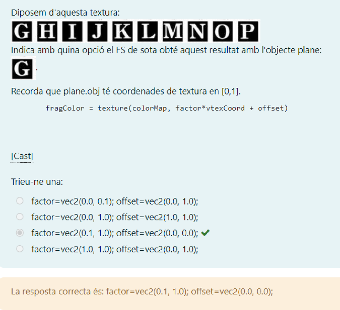
Solució de l'exercici:
factor = vec2(0.1, 1.0);
offset = vec2(0.0, 0.0); // Desplaça 4 posicions a la dreta
factor = vec2(0.1, 1.0);
offset = vec2(0.4, 0.0); // Desplaça 4 posicions a la dreta
Pregunta original per cercar:
"Considera un sistema de cinema 360º basat en una pantalla gegant de forma esfèrica... projector emet 3000 lumens..."
Concepte Clau (Repartir la mantega)
Imagina que tens una quantitat fixa de pintura (Llum/Lumens) i has de pintar tota la paret interior d'una pilota gegant (Esfera).
La Il·luminància () mesura "que densa" queda la capa de pintura. Com més gran sigui l'esfera, més repartida quedarà la llum i més baix serà el valor.
La fórmula fonamental és:
Per resoldre problemes de projectors centrals en esferes, només has de recordar l'àrea d'una esfera.
Nota: Si el projector no fos 360º (per exemple, només il·luminés una semiesfera), dividiríem l'àrea per 2. Però aquí diu "totes direccions" o "cinema 360º".
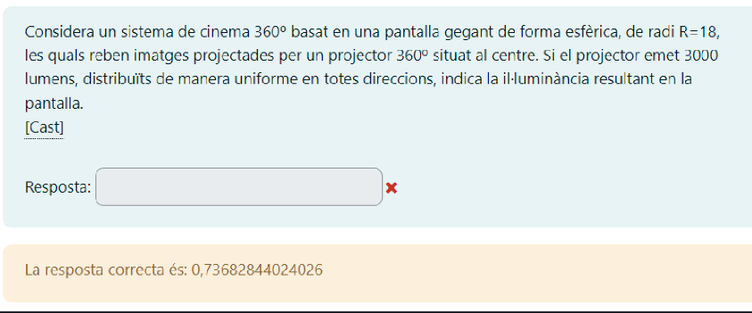
Dades:
- Radi () =
- Flux () = lumens
- Distribució uniforme (tota l'esfera)
Pregunta: Indica la il·luminància resultant ().
Pas 1: Calcular l'Àrea de la pantalla (Esfera)
Pas 2: Calcular la Il·luminància
Càlcul final:
Solució de l'exercici:
Pregunta original per cercar:
"Per un determinat pixel (x,y), els valors al frame buffer són: depthBuffer[x,y]=0.5, stencilBuffer[x,y]=4... glStencilTest(GL_ALWAYS, 6, 255)... glStencilOp(GL_ZERO, GL_INCR, GL_REPLACE)"
Concepte Clau (Distingir els Valors)
Abans de començar, és vital no barrejar els números:
glStencilTest). Si fem un GL_REPLACE, aquest és el valor que escriurem.La funció és glStencilOp(sfail, dpfail, dppass).
Imagina que tens 3 cartes a la mà. Només en pots jugar una segons què passi als controls de seguretat.
sfail - GL_ZERO): Es juga si et tomben al primer control (Stencil).dpfail - GL_INCR): Es juga si passes el primer control, però et tomben al segon (Depth).dppass - GL_REPLACE): Es juga si passes tots dos controls (Èxit total).Diagrama de Flux:
GL_ZERO). Fi.GL_INCR). Fi.GL_REPLACE). Fi.Exacte, ho has intuït molt bé, però no són les úniques opcions. N'hi ha 8 en total (les típiques comparacions matemàtiques).
Per saber si el Stencil falla o no, has de mirar el primer paràmetre de la funció glStencilTest(funcio, ref, mask).
Aquesta funció compara dos valors:
Aquí tens la "xuleta" per saber quan passa (és True) i quan falla (és False):
Funció (func) |
Què significa? | Resultat en el teu exemple (Ref=6 vs Buffer=4) |
|---|---|---|
GL_ALWAYS |
Sempre PASSA. Ignora els números. | PASSA |
GL_NEVER |
Sempre FALLA. Ignora els números. | FALLA |
GL_LESS |
Passa si Ref < Buffer |
Falla ( és fals) |
GL_GREATER |
Passa si Ref > Buffer |
PASSA ( és cert) |
GL_LEQUAL |
Passa si Ref <= Buffer |
Falla |
GL_GEQUAL |
Passa si Ref >= Buffer |
PASSA |
GL_EQUAL |
Passa si Ref == Buffer |
Falla () |
GL_NOTEQUAL |
Passa si Ref != Buffer |
PASSA |
GL_ALWAYS: No calculars res. Passa directe a la següent porta (Depth Test).GL_NEVER: No calculis res. Et tomben a la primera porta (executes sfail).GL_LESS, GL_EQUAL, etc.): Has de comparar el número que et donen al test (ref) amb el que et diuen que hi ha al buffer.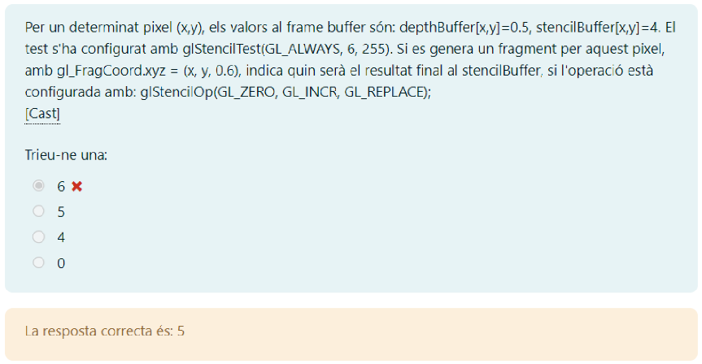
Situació:
- Test:
GL_ALWAYS(Sempre diem que SÍ).- Profunidat: (Nou) vs (Vell). El és més gran Està darrere Falla.
- Buffer Actual: .
- Referència: .
Anàlisi del Camí:
GL_ALWAYS, PASSA. (Descartem la 1a opció).GL_INCR.Aquí tens el càlcul per a les tres possibilitats, perquè vegis d'on surten els números:
CAS A: Si haguéssim agafat la 1a opció (GL_ZERO)
glStencilTest hagués fallat (ex: GL_NEVER).CAS B: Si haguéssim agafat la 2a opció (GL_INCR) [EL NOSTRE CAS]
CAS C: Si haguéssim agafat la 3a opció (GL_REPLACE)
Solució Final: Com que estem al Cas B, la resposta és 5.
Pregunta original per cercar:
"El punt 3D que resulta d'aplicar la transformació representada per la matriu... al punt (24.00, 8.00, 16.00, 4.00) és..."
Concepte Clau (No t'oblidis de dividir!)
En gràfics per ordinador, treballem amb coordenades de 4 dimensions per poder fer translacions amb matrius.
Quan et demanen el "Punt 3D resultant" (Cartesià), no n'hi ha prou amb multiplicar. Has de fer dos passos:
Segueix sempre aquests dos passos:
Pas 1: Multiplicar la Matriu pel Vector
Mirem la matriu de l'exercici. És gairebé una matriu identitat, però té un a la segona posició (eix Y).
Resultat temporal (Homogeni): (24, 32, 16, 4)
Pas 2: Passar a 3D (Dividir per W)
Aquí és on vas fallar a la resposta marcada. El punt té una . Per saber on cau realment a l'espai 3D, has de dividir-ho tot per 4.
Dades:
Matriu: Escala la Y per 4.
Punt d'entrada:Pregunta: Quin és el punt 3D final?
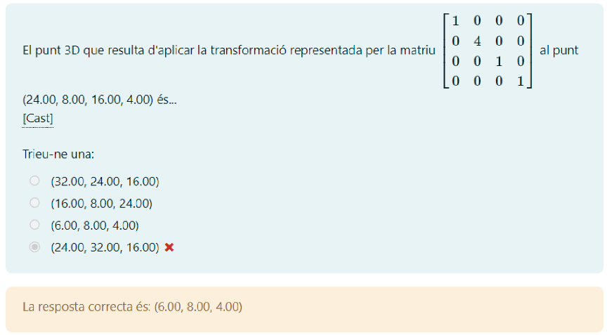
Pregunta original per cercar:
"Selecciona la única matriu de projecció (projectionMatrix) plausible per a una càmera perspectiva..."
Concepte Clau (La Deformació de la W)
En gràfics 3D hi ha dos tipus principals de càmeres:
Per aconseguir l'efecte de "fer-se petit", l'ordinador divideix les coordenades per la profunditat ().
Perquè això passi automàticament, la matriu ha de moure la al lloc de la (el quart component).
La Regla d'Or Visual:
0 0 0 1 És Ortogràfica (o una simple rotació/translació).0 0 -1 0 És Perspectiva.Només cal que miris la 4a fila (la de baix de tot) de cada matriu.
En una matriu de projecció perspectiva estàndard (com gluPerspective), la coordenada ha de ser igual a (per poder fer la divisió després).
Això s'aconsegueix posant un -1 a la columna de la Z (3a columna) i un 0 a la columna de la W (4a columna).
L'estructura típica és així:
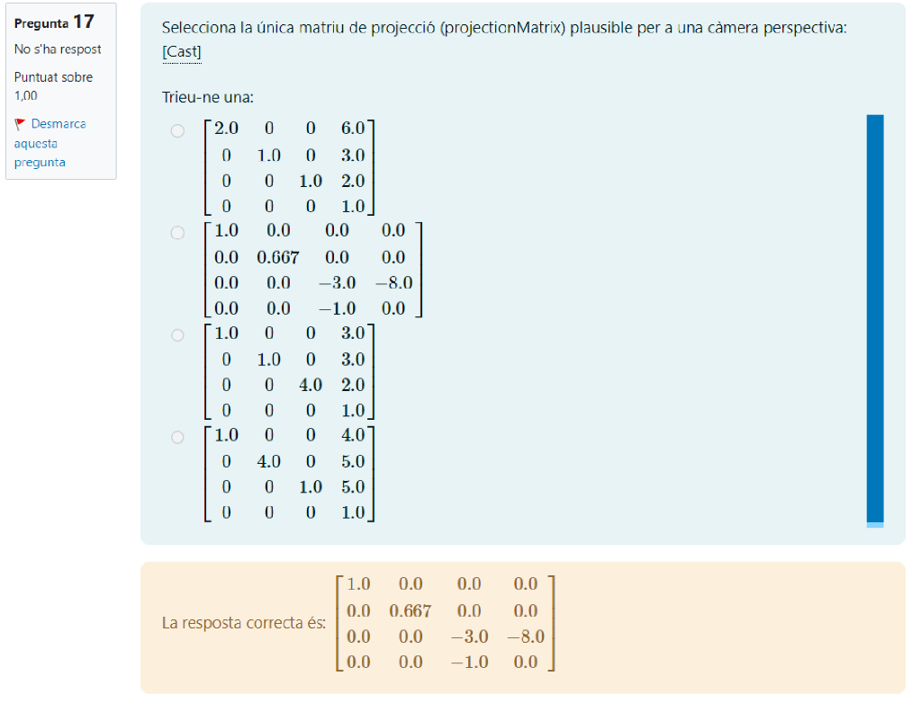
Pregunta original per cercar:
"Tria l'espai de coordenades en que ha d'estar P per tal que la transformació modelMatrixInverse*P tingui sentit"
El pipeline gràfic estàndard funciona en aquest ordre:
La modelMatrix normal:
La modelMatrixInverse (La inversa):
Per tant, si vols multiplicar modelMatrixInverse * P, el punt ha de ser, per força, a l'espai d'entrada d'aquesta matriu.
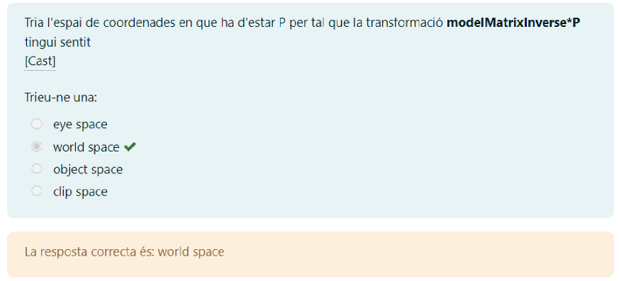
Operació:
modelMatrixInverse * P
Pregunta: En quin espai ha d'estar ?
Anàlisi Lògica:
Per què les altres són falses?
modelMatrix normal (anada), no la inversa.viewMatrix.Solució de l'exercici:
Pregunta original per cercar:
"Un estimador de la il·luminació global amb molta variància es distingeix per..."
Concepte Clau (Variància = Soroll)
En el món del renderitzat realista (com el Ray Tracing o Path Tracing), calculem la llum llançant raigs aleatoris (mètode de Monte Carlo).
Imagina que tires dards a una diana per calcular la puntuació mitjana.
Visualment, en una imatge, aquesta "dispersió" o incertesa es tradueix en GRANOLLERS o SOROLL (punts blancs i negres que ballen).
Quan un algorisme de càlcul de llum (estimador) té "molta variància", vol dir que per a un mateix píxel, cada raig que llances et torna un valor molt diferent (un et diu "molta llum", l'altre "foscor total").
El resultat final a la pantalla és una imatge plena de "gra" (com una foto feta de nit amb el mòbil). Per arreglar-ho, tens dues opcions:
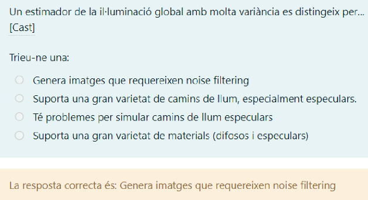
Pregunta: Què distingeix un estimador amb molta variància?
Anàlisi de les opcions:
Solució de l'exercici:
Pregunta original per cercar:
"El punt 3D que resulta d'aplicar la transformació representada per la matriu... al punt (18.00, 6.00, 18.00, 3.00) és..."
Concepte Clau (Translació Homogènia)
Aquesta matriu té números a l'última columna. Això indica una Translació (moure l'objecte).
Però atenció: Com que el punt d'entrada té una , aquesta afectarà la translació quan multipliquem matriu per vector. I al final, com sempre, hem de dividir per W.
Pas 1: Multiplicació (Fila per Columna)
Calculem component a component:
Resultat intermedi (Homogeni): (21, 15, 30, 3)
Pas 2: La Divisió Homogènia (Normalitzar)
Per obtenir el punt 3D real, dividim tot per la resultant ().
Resultat final:
El punt 3D és (7.00, 5.00, 10.00)
Per què les altres són falses?
Solució de l'exercici:
D'acord! Simplifiquem-ho al màxim. Si només tens aquests dos casos (que són els més habituals als exàmens), aquí tens la solució pas a pas per a cadascun, utilitzant les dades exactes de les teves imatges.
El secret en tots dos és el mateix: Primer calcula, després divideix per W.
Com la reconeixes?
Té números a l'última columna (la de la dreta del tot). En el teu cas: 1, 3, 4.
Dades:
PAS 1: Calcula el nou punt (Sumant el pes)
Aquí la trampa és que has de multiplicar la translació per la W (3) abans de sumar-la.
Resultat temporal:
PAS 2: Divideix per W (El pas final)
Agafa els resultats i divideix-los per 3.
SOLUCIÓ: (7.00, 5.00, 10.00)
Com la reconeixes?
Té un número diferent d'1 a la diagonal (la línia que baixa). En el teu cas: un 4 a la segona posició (Y).
Dades:
PAS 1: Calcula el nou punt (Multiplicant)
Aquí és més directe, només afectem la coordenada que té el número a la matriu.
Resultat temporal: Compte! Molta gent marca això i falla.
PAS 2: Divideix per W (El pas final)
Agafa els resultats i divideix-los per 4.
SOLUCIÓ: (6.00, 8.00, 4.00)
Pregunta original per cercar:
"Tenim una escena tancada que conté 49 objectes difosos i 3 llums puntuals. Volem generar una imatge de 640 x 1080 pixels amb Ray Tracing clàssic. Quants shadow rays cal llançar?"
Concepte Clau (Un píxel, Tres preguntes)
En el Ray Tracing Clàssic, el procés bàsic per a objectes difosos (mate, sense brillantor ni transparència) és molt mecànic:
La Trampa: El nombre d'objectes (49) no importa per a aquest càlcul. Només importa quants píxels tenim i quantes llums hi ha.
La fórmula és una simple multiplicació:
On:
Nota: Com que els objectes són difosos, no hi ha raigs secundaris (reflexió/refracció), així que el càlcul s'acaba aquí.
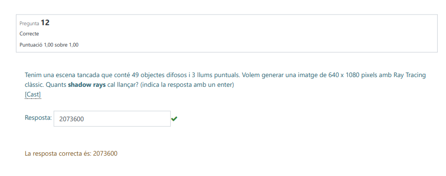
Dades:
- Resolució:
- Llums:
- Objectes: (Dada irrellevant)
- Tipus: Escena tancada (100% d'impactes)
Pas 1: Calcular quants píxels (i per tant, quants impactes primaris) tenim.
Pas 2: Calcular els Shadow Rays.
Per a cadascun d'aquests punts, hem de comprovar les llums.
Càlcul Final:
Solució de l'exercici:
Pregunta original per cercar:
"Indica la matriu que s'utilitza a la tècnica de shadow mapping per obtenir les coordenades de textura (s,t,p,q) d'un vèrtex, si el vèrtex es troba en object space."
Concepte Clau (El Viatge del Vèrtex)
El Shadow Mapping consisteix a mirar l'escena des del punt de vista de la llum. Per saber si un píxel està a l'ombra, hem de transformar la seva posició 3D en una coordenada 2D dins del mapa d'ombres (la textura de profunditat).
El repte és que les coordenades de projecció estàndard van de -1 a 1 (Clip Space), però les textures es llegeixen de 0 a 1.
Per tant, al final de tot, cal fer una "petita trampa" matemàtica (Escalar i Traduir) per adaptar el rang.
Hem de construir la cadena completa de transformacions. Recorda que en matrius (column-major), les operacions s'escriuen d'esquerra a dreta, però s'apliquen de dreta a esquerra.
L'ordre lògic del viatge és:
La Fórmula Final:
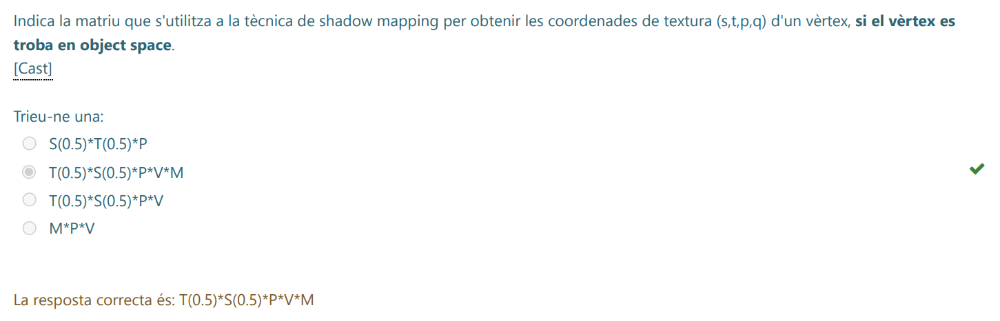
Condició: El vèrtex es troba en Object Space.
Analitzem les opcions:
Solució de l'exercici:
Pregunta original per cercar:
"Indica quina és l'opció més adient per a completar aquest codi... vec3 T = refract(ray.dir, Nhit, ______ );"
Concepte Clau (La Ràtio de Refracció)
Quan un raig de llum travessa la frontera entre dos materials (per exemple, de l'aire a l'aigua), es desviu. Aquest fenomen es diu Refracció.
La direcció del nou raig () es calcula utilitzant la Llei de Snell:
En programació gràfica (GLSL/C++), la funció refract(I, N, eta) ja fa tots els càlculs vectorials per nosaltres, però necessita un paràmetre clau: eta ().
Aquest paràmetre eta és sempre la divisió (ràtio) entre l'índex de refracció d'on venim i l'índex de refracció on entrem.
Analitzem les variables del codi per identificar qui és qui:
mu (paràmetre de la funció): És l'índex de refracció del medi pel qual estava viatjant el raig fins ara (Origen, ).muHit (variable de l'intersecció): És l'índex de refracció del nou material que acabem de tocar (Destí, ).Per calcular el vector de transmissió (el raig refractat), hem de dir-li a la funció la relació entre aquests dos números.
La Fórmula:
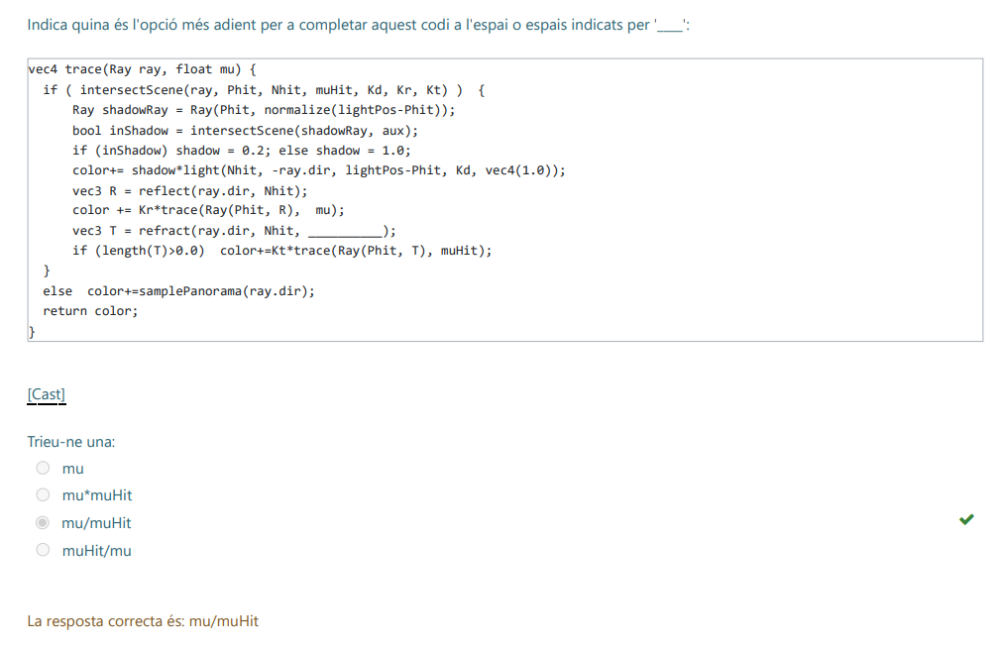
Codi:
vec3 T = refract(ray.dir, Nhit, ________ );
Anàlisi de les opcions:
mu: Incorrecte. La funció espera una ràtio, no un índex absolut.mu * muHit: Incorrecte. La llei de Snell treballa amb quocients, no productes.mu / muHit: CORRECTA. Representa la ràtio necessària per a la fórmula estàndard.muHit / mu: Incorrecte. Això seria per sortir del material, no per entrar-hi (o si la funció esperés l'invers, però l'estàndard és origen/destí).Solució de l'exercici:
Pregunta original per cercar:
"Donat el punt (1.00, 3.00, 6.00), una representacio equivalent en coordenades homogenies es..."
Concepte Clau (L'Escalat de la W)
En gràfics per ordinador, un punt 3D no té una única representació en coordenades homogènies , sinó que en té infinites.
Totes representen el mateix punt sempre que la proporció sigui la mateixa.
La regla bàsica és:
Això vol dir que si multipliques tots els components (inclosa la W) pel mateix número (), el punt no canvia de lloc.
Per saber quina opció és correcta, has de fer la prova de la divisió (normalització) amb cada opció. Divideix els tres primers números pel quart (). Si obtens el punt original , és la bona.
El punt original és: (1, 3, 6).
Analitzem les opcions una per una:
Opció (4.00, 14.00, 24.00, 4.00):
Opció (2.00, 6.00, 24.00, 2.00):
Opció (4.00, 12.00, 24.00, 4.00): [CORRECTA]
Opció (1.00, 3.00, 6.00, 0.00):
Solució de l'exercici:
Pregunta original per cercar:
"Per a un determinat fragment, les derivades parcials... tenen aquests valors... = 64... Quin és el LoD més adient..."
Concepte Clau (La Piràmide de Mipmaps)
El Mipmapping és una tècnica per evitar que les textures "brillin" o facin soroll quan estan lluny. Consisteix a tenir versions de la imatge cada cop més petites (meitat d'amplada i alçada).
El LoD (Level of Detail) ens diu a quin "pis" de la piràmide hem d'anar a buscar el color.
Si un píxel de pantalla ocupa molts píxels de la textura (texels), necessitem un LoD alt.
Per calcular el nivell, hem de mirar la "taxa de canvi" (les derivades).
Si la derivada és , vol dir que 1 píxel de pantalla salta sobre píxels de la textura.
La fórmula per trobar el nivell és el Logaritme en base 2 d'aquest salt màxim:
Simplement ens preguntem: "A quina potència he d'elevar el 2 per obtenir aquest número?"
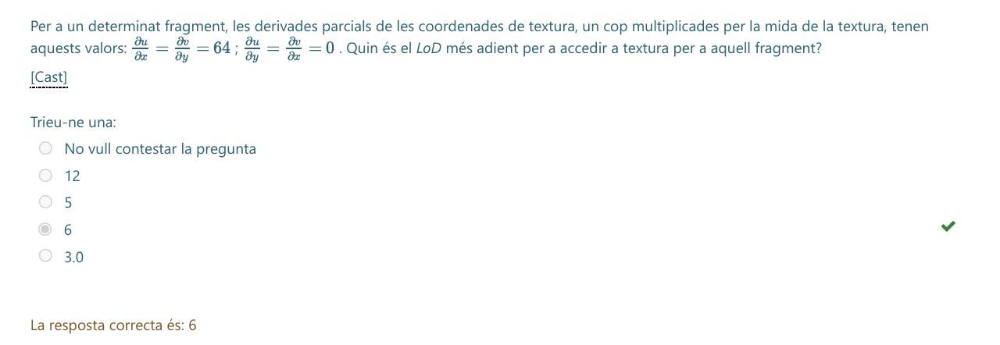
Dades:
- Derivades: .
- (Les altres són 0, així que el màxim és 64).
El Raonament:
El valor és 64. Això vol dir que hem de comprimir 64 texels en 1 píxel.
Busquem la potència de 2:
Com que , el nivell de detall (LoD) és 6.
Solució de l'exercici:
length) Pregunta original per cercar:
"Indica quina és l'opció més adient per a completar aquest codi... float rho = max(________(dFdx(uv)), ________(dFdy(uv)));"
Concepte Clau (La Mida del Vector)
Per calcular quin nivell de Mipmap (LOD) necessitem, hem de saber "quants texels de textura caben dins d'un píxel de pantalla".
En GLSL, les funcions dFdx(uv) i dFdy(uv) ens diuen quant canvien les coordenades de textura quan ens movem un píxel a la dreta (X) o un píxel avall (Y).
El problema és que uv és un vector (vec2). Per tant, dFdx(uv) ens retorna un vector de direcció que ens diu cap a on i quant es mou la textura.
Per comparar magnituds (qui és més gran?), necessitem convertir aquest vector en un sol número (un escalar) que representi la seva longitud o distància.
La fórmula matemàtica per estimar el factor de compressió () és agafar la longitud màxima dels vectors derivats:
En programació d'ombres (GLSL), la funció que calcula la norma o mòdul d'un vector () s'anomena length().
L'estructura lògica és:
dFdx(uv)length(...)max).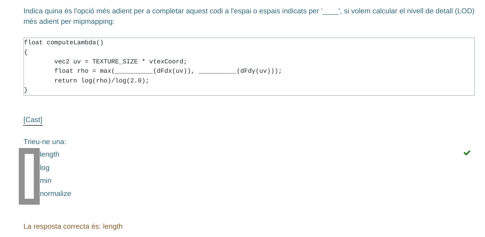
Codi a completar:
float rho = max(________(dFdx(uv)), ________(dFdy(uv)));
Anàlisi de les opcions:
length: [CORRECTA]. Agafa el vec2 que retorna la derivada i calcula la seva longitud (float). Això és exactament el que necessitem per saber la "taxa de canvi".log: Això és una operació matemàtica per escalar el resultat final, no per mesurar un vector.min: No tindria sentit aquí. Busquem la longitud del vector, no el mínim dels seus components.normalize: Això convertiria el vector en longitud 1. Destruiria la informació de la mida, que és justament el que necessitem per saber el nivell de detall!Solució de l'exercici:
Pregunta original per cercar:
"Si volem crear una piràmide de mipmapping completa a partir d'una textura de 32x32 texels, quants nivells de detall (LoD) hem de definir?"
Concepte Clau (Dividir entre 2 fins a arribar a 1)
Una piràmide de mipmapping completa conté la textura original i totes les reduccions successives (dividint l'amplada i alçada per 2) fins a arribar a la textura més petita possible: un sol píxel ().
Per saber quants nivells hi ha en total, simplement has de comptar quantes vegades pots dividir la mida per 2, més l'original.
La fórmula ràpida és utilitzar el logaritme en base 2:
El és molt important perquè comptem el nivell 0 (l'original).
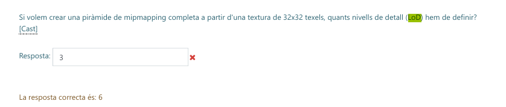
Dades: Textura de .
Fem el compte pas a pas (reduint a la meitat):
Si els comptes, veuràs que hi ha 6 imatges en total a la cadena.
Càlcul matemàtic:
és .
Per tant, tenim passos de reducció.
.
Solució de l'exercici:
Pregunta original per cercar:
"El LOD 2 d'una textura té 256 x 128 texels. Quina mida té el LOD 0 d'aquesta mateixa textura?"
Concepte Clau (Pujar i Baixar l'Escala)
La piràmide de Mipmaps funciona sempre amb potències de 2:
En aquest exercici ens donen un nivell reduït (LOD 2) i ens demanen recuperar la mida original (LOD 0). Per tant, hem de fer el camí invers: Multiplicar.
Si estàs al nivell i vols tornar al nivell , has de multiplicar les dimensions per .
O, més fàcil, anar pas a pas multiplicant per 2.
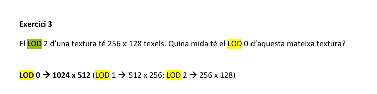
Dades:
- LOD 2 =
- Objectiu: LOD 0
Càlcul Pas a Pas (Marxa Enrere):
Som a LOD 2: .
Pas a LOD 1:
Pas a LOD 0 (Original):
Solució de l'exercici:
Pregunta original per cercar:
"Volem texturar un polígon rectangular situat sobre el pla Z = 0. Sabem que el seu vèrtex mínim té coordenades (0,0,0), i el vèrtex màxim té coordenades (6, 2, 0)... indica l'opció..."
Concepte Clau (La Regla de Tres de la Textura)
Quan generem coordenades de textura automàticament usant plans (vectors i ), estem definint una equació lineal:
El secret és entendre què signifiquen els valors de coordenada de textura:
Per tant, per trobar els valors del vector, només cal dividir les Repeticions per la Mida del polígon.
Pas 1: Analitzar la Geometria (Mides)
L'enunciat diu que el rectangle va de a .
Pas 2: Analitzar la Imatge Resultant (Repeticions)
Compta quants cops apareix l'edifici original (la casella de dalt) en la imatge final de sota.
Pas 3: Calcular els Vectors (Regla de Tres)
Vector S (Eix X - Horitzontal):
Volem que en metres de paret hi càpiguen repeticions.
El vector serà: S = vec4(0.83, 0, 0, 0) (només afecta a la X).
Vector T (Eix Y - Vertical):
Volem que en metres d'alçada hi càpiguen pisos.
El vector serà: T = vec4(0, 1.5, 0, 0) (només afecta a la Y).
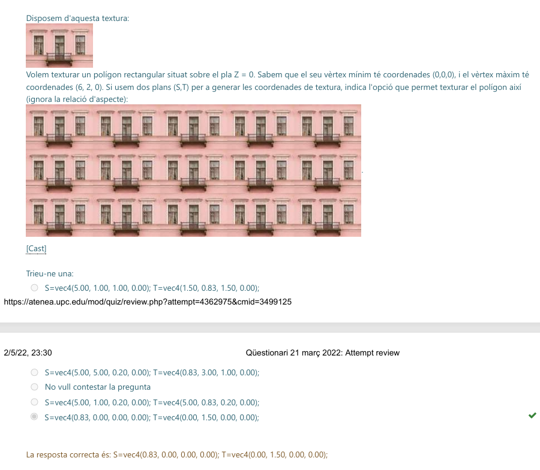
Busquem l'opció que tingui a la primera posició de la S i a la segona posició de la T.
Anàlisi de les opcions:
S=vec4(5.00...): Incorrecte.S=vec4(5.00...): Incorrecte.S=vec4(5.00...): Incorrecte.S=vec4(0.83, ...); T=vec4(0.00, 1.50, ...): CORRECTA. Coincideix amb els càlculs ( i ).Solució de l'exercici:
Pregunta original per cercar:
"Les coordenades de textura (s,t) que rep un VS en general seràn dins l'interval..."
Concepte Clau (El Llenç Infinit)
Hi ha una confusió molt habitual en gràfics:
Imagina que empaperes una paret. El rotllo de paper té una amplada fixa (de 0 a 1).
El Vertex Shader (VS) només rep números float. No li importa si la imatge s'acaba al 1.0; ell processa el número que li donis. És després (al Fragment Shader o al Sampler) on es decideix què fer amb aquests números grans (repetir, estirar, etc.).
Les coordenades de textura (s, t) o (u, v) són atributs del vèrtex, igual que la posició o la normal. Matemàticament, no tenen cap límit.
GL_MIRRORED_REPEAT o simplement per moure la textura.Per tant, l'interval de definició possible és infinit.
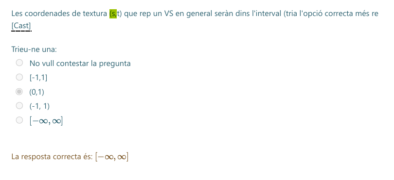
Pregunta: Quin és l'interval general de les coordenades que rep el VS?
Anàlisi de les opcions:
(0,1) o [0,1]: Incorrecte. Això només permetria pintar la textura una vegada sense repeticions.[-1,1]: Incorrecte. Són les coordenades normalitzades de dispositiu (NDC), no les de textura.1000.0 o -50.5 a un vèrtex sense cap problema. El sistema gràfic ho accepta perfectament.Solució de l'exercici:
Pregunta original per cercar:
"Volem texturar un polígon rectangular... vèrtex mínim (0,0,0) i màxim (4, 3, 0)... indica l'opció..."
Concepte Clau (Repeticions vs Mida)
Recorda la fórmula màgica per a la generació de coordenades amb plans:
Aquest factor és el número que ha d'anar a la posició del vector (per a l'amplada) i a la posició del vector (per a l'alçada).
Pas 1: Analitzar la Geometria (Mida del Polígon)
Les coordenades van de a .
Pas 2: Analitzar la Imatge (Comptar Repeticions)
Mira la imatge resultat (el mur de finestres). Compta quantes finestres hi ha.
Pas 3: Calcular els Factors (Divisió)
Per al vector S (Horitzontal - Eix X):
Volem ficar finestres en un espai de metres.
El vector serà: S = vec4(0.75, 0, 0, 0)
Per al vector T (Vertical - Eix Y):
Volem ficar finestres en un espai de metres.
El vector serà: T = vec4(0, 1.33, 0, 0)
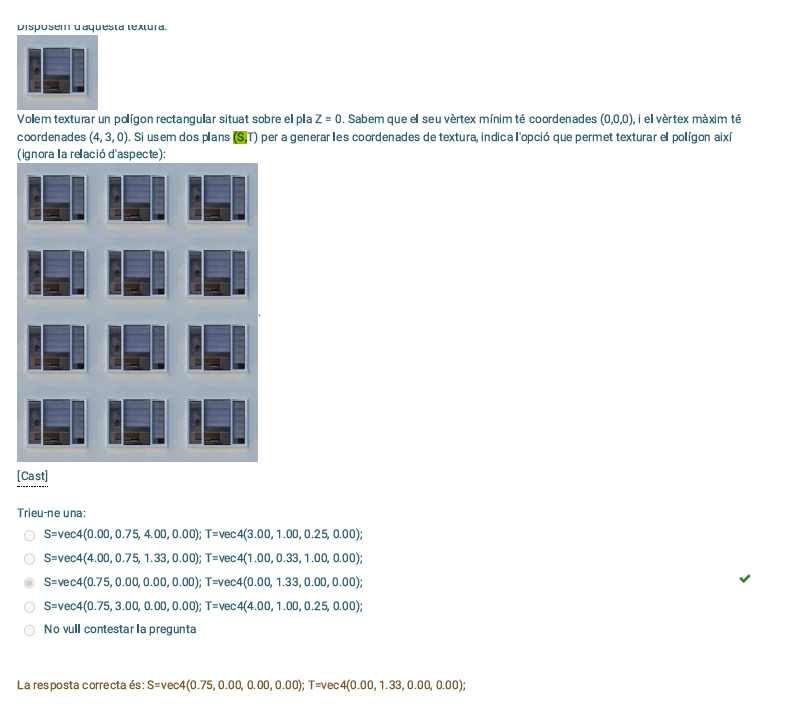
Busquem l'opció que tingui a la primera component de S i a la segona component de T.
Anàlisi de les opcions:
S=vec4(0.00, 0.75...): Malament. El 0.75 està a la Y (2a posició), hauria d'estar a la X.S=vec4(4.00...): Malament.S=vec4(0.75, 0.00...); T=vec4(0.00, 1.33...): CORRECTA. Coincideix perfectament amb els càlculs.S=vec4(0.75...); T=vec4(4.00...): Malament la T.Solució de l'exercici:
Pregunta original per cercar:
"Indica la matriu... si el vèrtex ja es troba en 'clip space of the light camera'."
Concepte Clau (Llegir la lletra petita)
En la pregunta 19, ens demanaven la matriu completa des de l'inici (Object Space). Per això necessitàvem totes les matrius () abans de fer l'ajust de textura.
En aquesta pregunta, l'enunciat diu: "el vèrtex JA es troba en Clip Space".
Això vol dir que el viatge "3D" ja s'ha fet. Les matrius (Model), (View) i (Projection) ja s'han aplicat.
Només queda l'últim pas: convertir les coordenades normalitzades (NDC) en coordenades de textura.
Només necessitem la "Matriu de Biaix" (Bias Matrix) que fa l'adaptació del rang.
L'operació matemàtica és: .
Això es tradueix en dues transformacions simples:
Ordre de les matrius:
Com sempre, s'apliquen de dreta a esquerra. Primer escalem, després movem.
Estat inicial: Clip Space (per tant, ja estan incloses en el punt).
Analitzem les opcions:
T(0.5)*S(0.5): CORRECTA. Només aplica l'ajust de rang. És l'únic que falta.S(0.5)*T(0.5)*P*V*M: Incorrecte. Això seria si comencéssim des de zero (Object Space). A més, l'ordre S i T està girat.T(0.5)*S(0.5)*P: Incorrecte (la que estava marcada amb la creu vermella). Si multipliques per una altra vegada, estàs projectant un punt que ja estava projectat. Això donaria resultats absurds.M*P*V: Incorrecte.Per què vas fallar la marcada?
Vas marcar l'opció que incloïa la P. Vas assumir que "Clip Space" vol dir "abans de projectar", però és al revés: Clip Space és el resultat de la projecció. Per tant, la sobra.
Solució de l'exercici:
Pregunta original per cercar:
"La figura representa un grup de 2x2 texels, amb diferents colors RGB... Una mostra bilinial al quadrat retornarà..."
Concepte Clau (La Mescla de Colors)
La Interpolació Bilineal calcula el color d'un punt fent una mitjana ponderada dels 4 texels veïns (Dalt-Esquerra, Dalt-Dreta, Baix-Esquerra, Baix-Dreta).
Si el punt de mostreig (el quadrat ) està exactament al mig, la lògica diu que hauríem de sumar els 4 colors i dividir per 4 (pes de 0.25 cadascun). Però en aquest exercici hi ha un truc visual o de coordenades.
Mirem els cercles de colors:
L'opció marcada com a correcta és (1.00, 0.50, 0.50).
Mirem què vol dir això component per component:
Vermell (R) = 1.00: Això és molt important. Per obtenir una mitjana d'1, tots els colors que sumem han de tenir Vermell=1 (o els que no en tinguin han de tenir pes 0).
Blau (B) = 0.50:
Si fem la mitjana estàndard dels 4 colors, sortiria:
Però, si fem la mitjana NOMÉS de la fila de dalt (Groc i Magenta):
Resultat: (1.00, 0.50, 0.50). Coincideix exactament!
Això implica que, malgrat que el dibuix sembla centrat, la mostra (el quadrat) s'ha d'interpretar com si estigués situada sobre la línia superior (entre el groc i el magenta), ignorant la fila de baix.
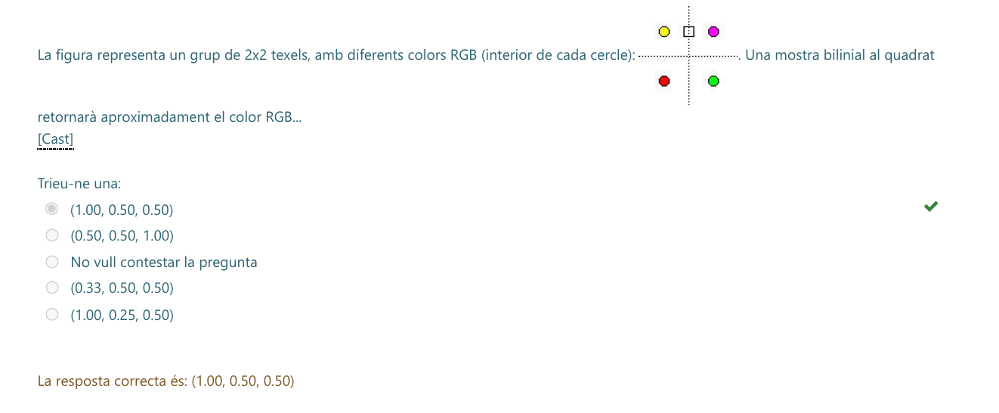
Solució de l'exercici:
Pregunta original:
"Una textura de 1024x1024 requereix... 1M texel. Quants texels cal emmagatzemar si la textura fa servir mipmapping?"
Concepte Clau (El "+33%" extra)
Quan actives el Mipmapping, la targeta gràfica no només guarda la imatge original. També guarda automàticament una cadena de versions reduïdes (la meitat d'ample i la meitat d'alt cada vegada) fins a arribar a 1x1.
La pregunta és: Quant espai extra ocupa tot això?
Hi ha una regla d'or en gràfics:
El Mipmapping augmenta l'ús de memòria en un 33% (o 1/3).
Vegem d'on surt aquest número màgic mirant les àrees:
Si sumes aquesta sèrie infinita (), el resultat matemàtic exacte és , que és 1.333...
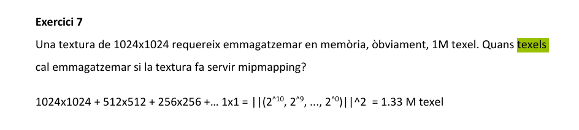
Dades:
- Textura original: 1M texels ().
Càlcul:
Simplement apliquem el factor d'expansió del mipmapping:
Solució de l'exercici:
Pregunta original per cercar:
"A la parametrització equirectangular estudiada a classe, el punt amb coordenades esfèriques (en radians) correspon..."
Concepte Clau (Trigonometria a l'Esfera)
[Image of spherical to cartesian coordinates diagram]
Volem passar de coordenades esfèriques (angles) a coordenades 3D en una esfera de radi 1.
La fórmula estàndard que s'utilitza en aquest context (on és latitud/elevació) és:
Utilitzarem els valors donats:
Pas 1: Calcular l'Alçada (Eix Y)
L'angle està molt a prop de (), que és el Pol Nord. Per tant, la Y ha de ser positiva i propera a 1.
Pas 2: Calcular el Radi Horitzontal ()
Necessitem saber com de gran és el cercle a aquesta alçada per calcular la X i la Z.
Pas 3: Calcular X i Z (usant el radi R)
Ara projectem l'angle . Aquest angle està al 4t quadrant (entre i ), per tant el Sinus serà negatiu i el Cosinus positiu.
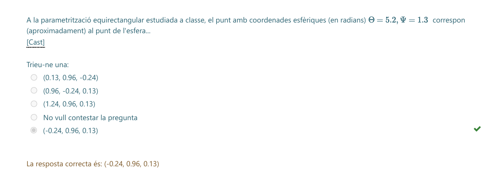
Mirem les opcions disponibles:
Coincideix perfectament amb els càlculs:
Solució de l'exercici: